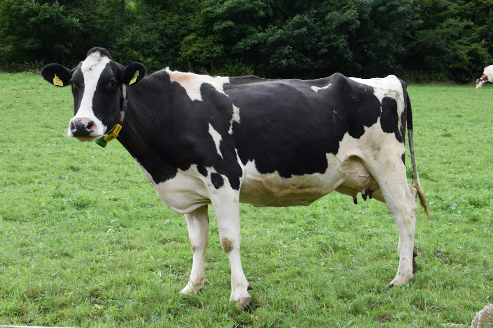
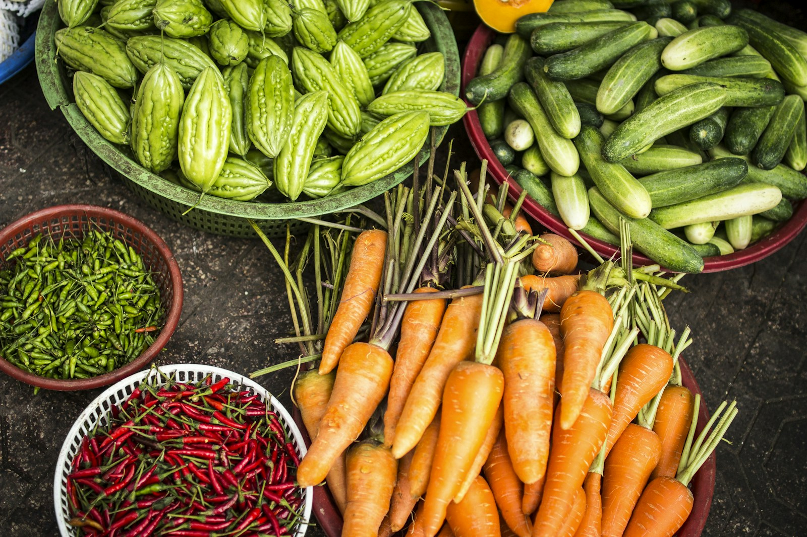

✦ 100% Pure · Desi Cow DungPure Soil Nutrition
Pure Soil Nutrition
From Nature to You
Sun-dried cow dung manure, vermicompost, and bio-fertilizers from trusted gaushalas. Healthier for your soil, better for the planet.

100%
Organic
Organic
100% Pure DungNo synthetic chemicals
From Local GaushalasSupporting dairy farmers
Rich MicrobesLiving soil nutrition
Eco-FriendlyBiodegradable packs
Discover nature
Shop by Category
Pure cow-dung fertilizers, composts, and natural soil boosters.

Our story
Rooted in Soil,
Nurtured by Nature
We partner with local gaushalas and dairy farmers to transform pure desi cow dung into nutrient-rich composts and bio-fertilizers.
Know More →Our process
From Gaushala to
Your Garden
Carefully composted, sun-dried, and naturally enriched for thriving plants.
Explore Our Story & Process →
Picked with purpose
Farm Favorites
Nutrient-rich cow dung composts and natural soil enhancers for thriving gardens.


A little love from our growers
Healthy Soil. Thriving Plants.
“Our terrace garden and vegetable beds transformed within weeks of using Rishir Organics aged cow dung manure and vermicompost.”
— A Rishir Organics gardener